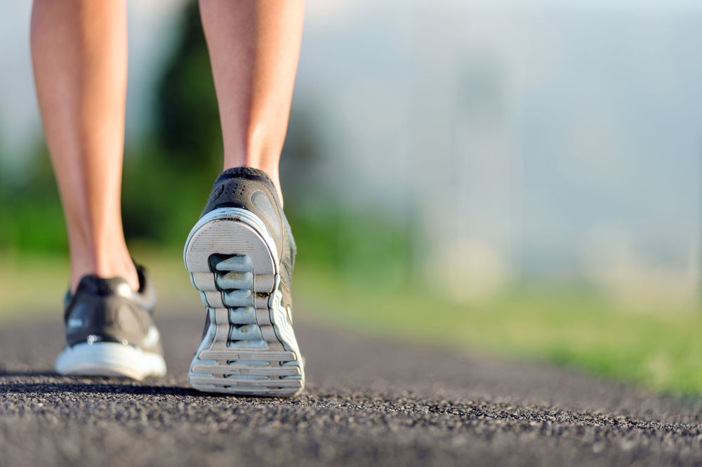
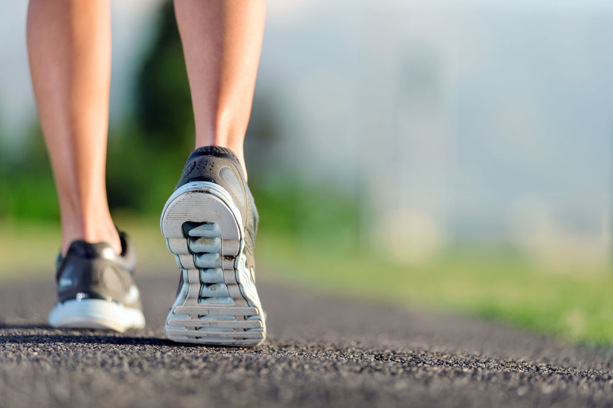
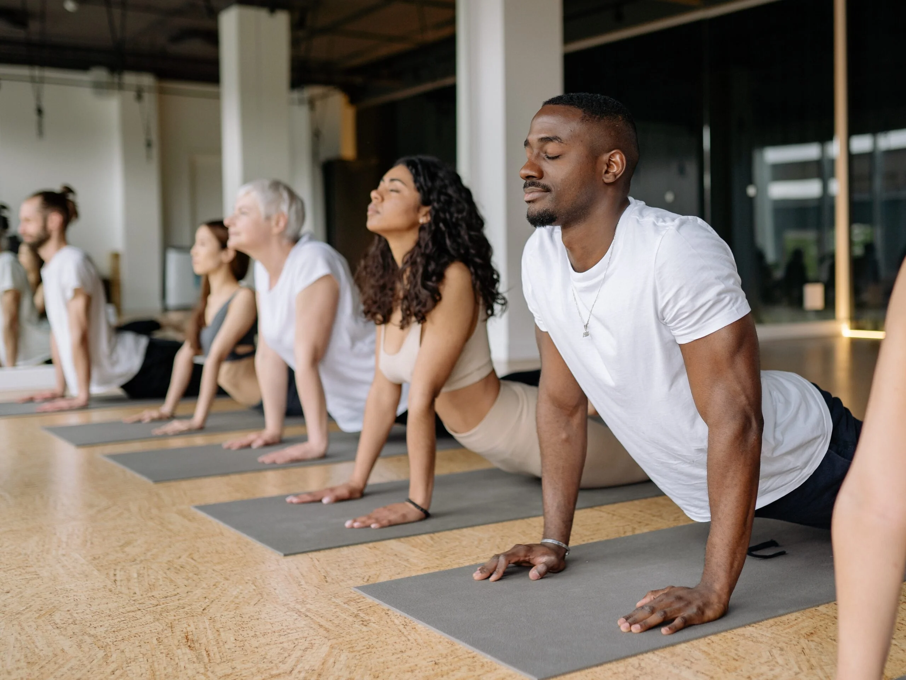
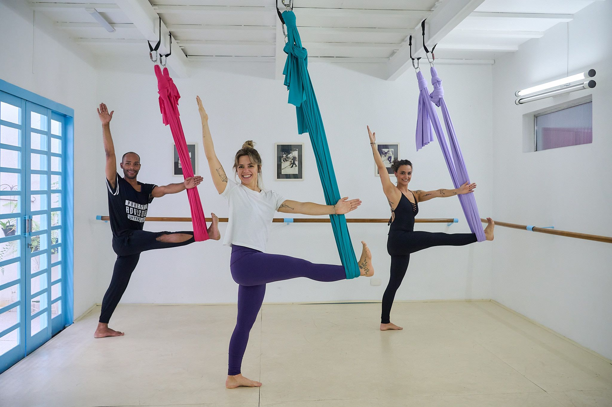
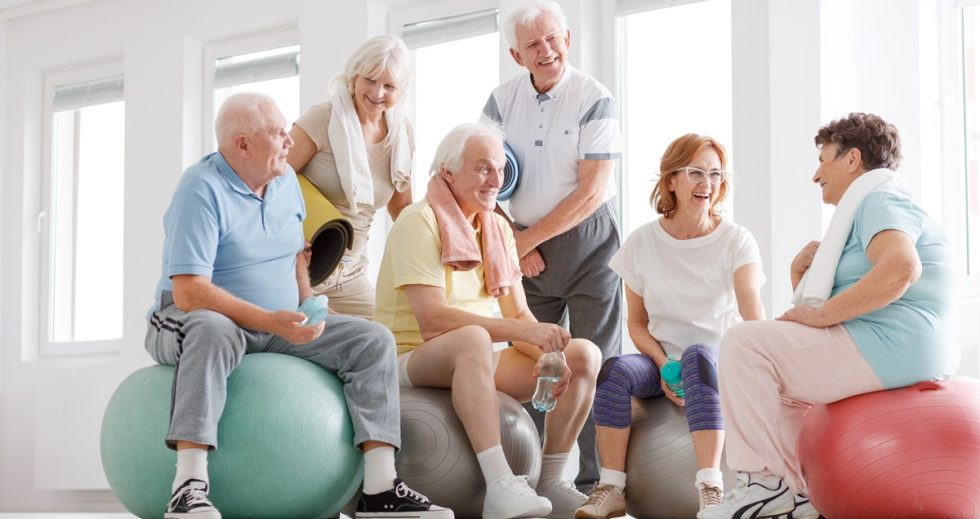
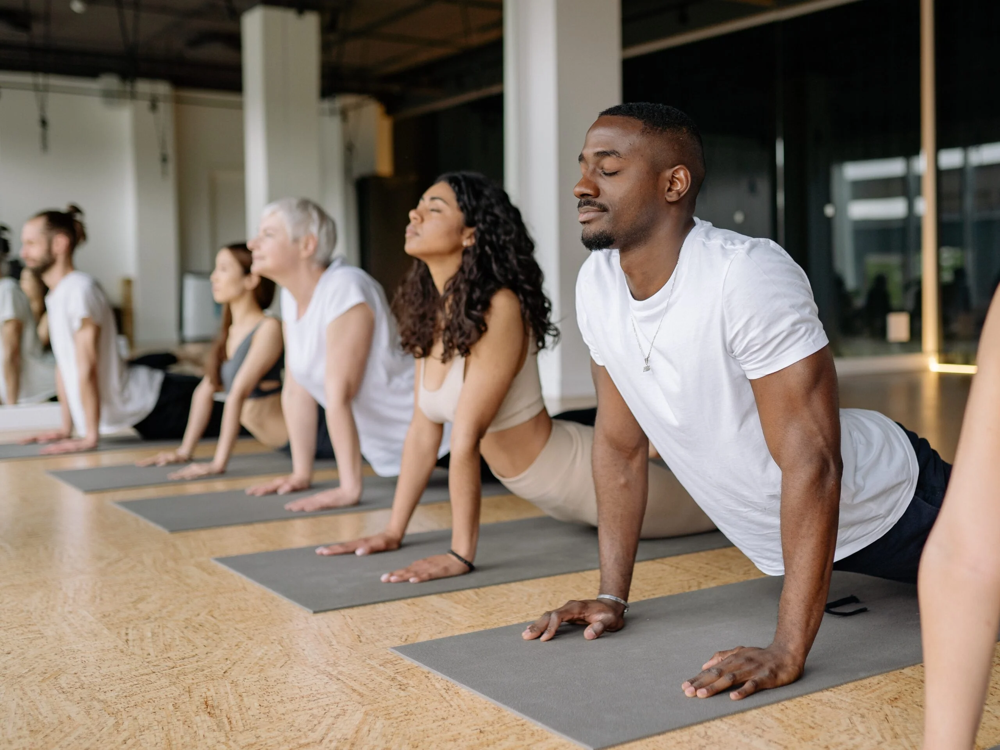
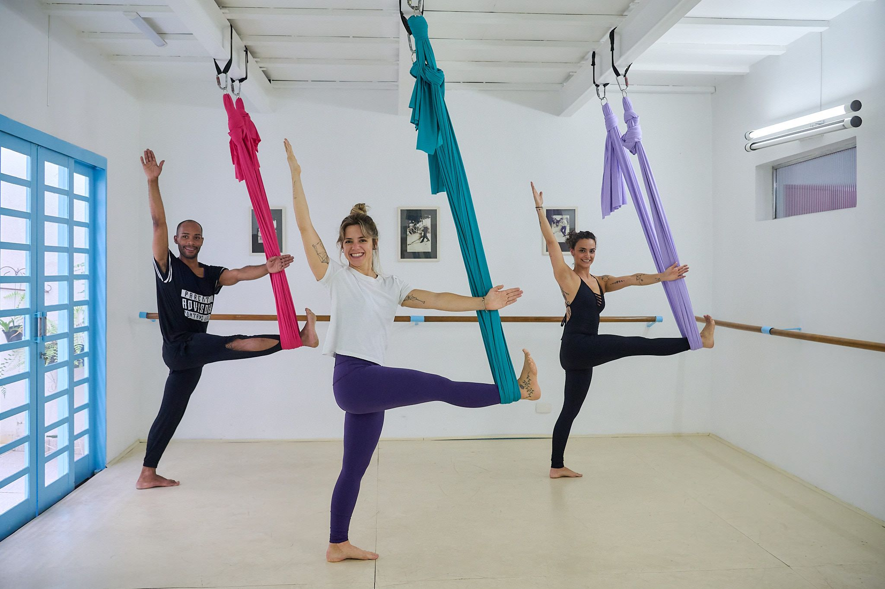
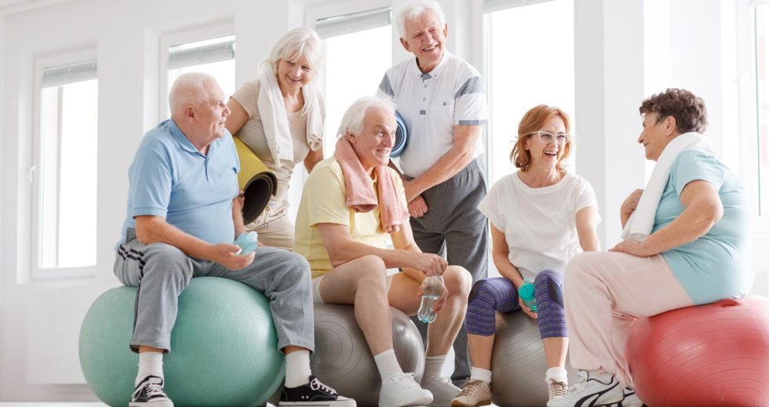

Serviços Oferecidos
Consultoria Nutricional 🥗
Agende uma consulta personalizada com nutricionistas especializados, focados em oferecer orientações práticas para melhorar sua alimentação, equilibrar nutrientes essenciais e atingir seus objetivos de saúde e bem-estar
Aulas de Yoga 🧘
Participe de aulas de yoga projetadas para promover o equilíbrio físico e mental, aumentar a flexibilidade, reduzir o estresse e trazer mais paz e clareza para sua rotina diária.
Atendimento Psicológico 🧠
Agende consultas com psicólogos especializados para cuidar da sua saúde mental, oferecendo suporte profissional em momentos de estresse, ansiedade e autoconhecimento, promovendo um espaço seguro para o seu desenvolvimento emocional.
 

 




